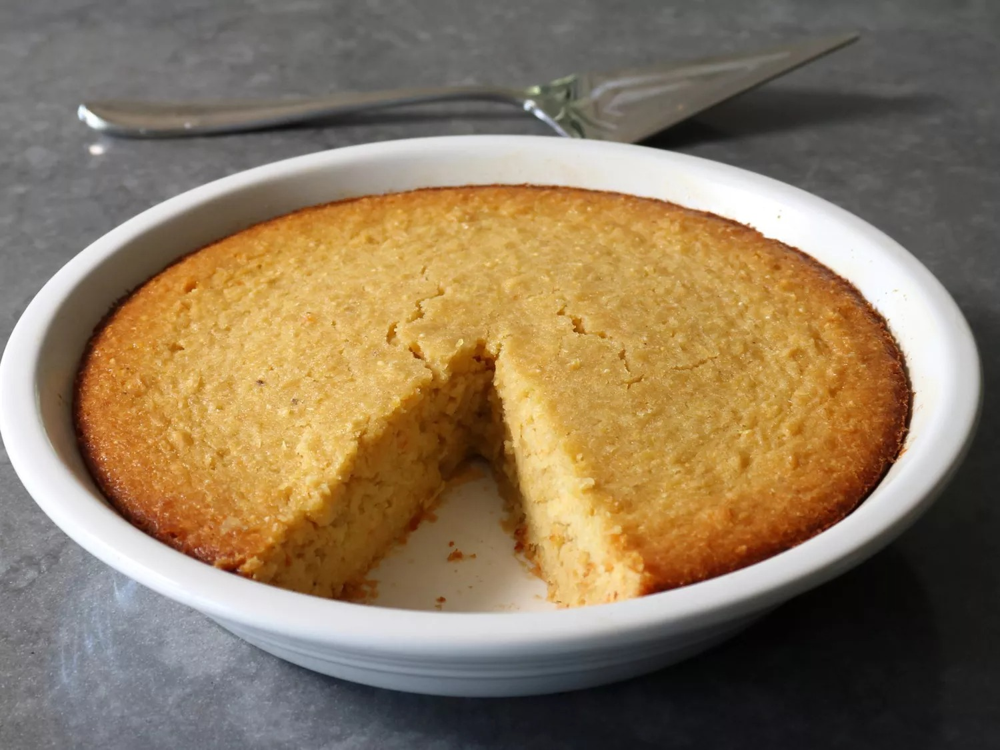

Corn Cake

Description
The combination of sweet and spicy is nothing new when it comes to
enjoying fresh summer corn, but this time we're utilizing that incredible
combo in a cake. Well, at least we're calling it a "cake." To be honest,
that was simply the name I settled on after deciding it wasn't really a
pie, pudding, spoon bread, or custard. Plus, it was inspired by
Mexican-style sweet corn cake, even though the texture isn't quite the
same, and it's significantly less sweet.
Most traditional corn cake recipes call for an entire can of sweetened
condensed milk, which makes sense if you're using corn that has almost no
natural sweetness, and that was the case when the original recipe was
developed. But, today's sweet corn is sweet, I mean it's right in the
name, so for me that's just too much sugar, and the reason I reworked the
recipe, using just the right amount of honey instead.
Ingredients
- 2 cups fresh corn kernels
- 1 habanero pepper, seeded and diced
- 2 large eggs
- ⅓ cup water
- ⅓ cup honey
- ⅔ cup all-purpose flour
- ½ cup unsalted butter, melted
- ⅓ cup cornmeal
- 1 teaspoon kosher salt
- ½ teaspoon baking powder
Steps
-
Gather ingredients. Preheat the oven to 350 degrees F (175 degrees C).
Generously butter a 9-inch pie dish.
-
Combine fresh corn kernels, habanero pepper, eggs, water, and honey in a
bowl. Puree with an immersion blender until almost smooth.
-
Add flour, melted butter, cornmeal, salt, and baking powder; whisk until
combined.
-
Transfer mixture into the greased pie dish. Shake gently to settle
mixture into the dish.
-
Bake in the center of the preheated oven until golden brown and a wooden
skewer inserted into the center of the cake comes out clean, 45 to 55
minutes.
-
Let cool until warm or room temperature before garnishing and serving.